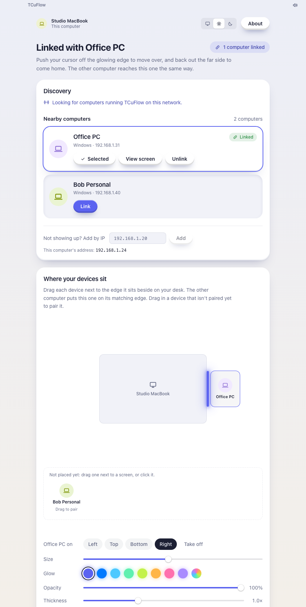
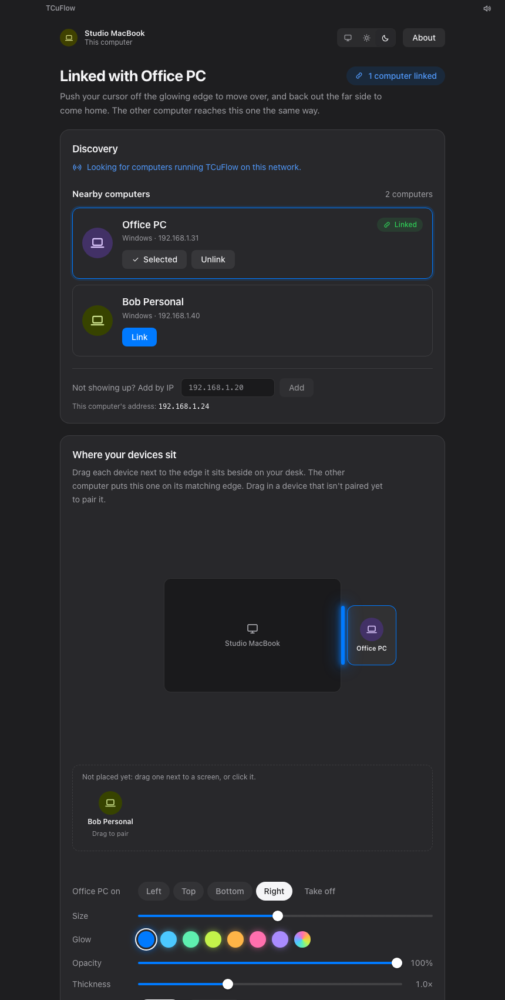

Pasang di keduanya
Unduh TCuFlow di Mac dan di Windows. Buka di keduanya; masing-masing muncul di daftar Nearby computers yang satunya.
Dorong kursor melewati tepi layar yang menyala, dan ia muncul di komputer sebelahnya. Keyboard, clipboard, dan file ikut pindah. Mac dan Windows, di jaringan lokalmu sendiri.
Kursor masuk ke tepi yang menyala, muncul di komputer sebelah. Dorong balik lewat sisi jauh untuk pulang.
Tidak ada akun, tidak ada server. Dua komputer di satu Wi-Fi saling menemukan, kamu cocokkan satu kode, selesai.
Unduh TCuFlow di Mac dan di Windows. Buka di keduanya; masing-masing muncul di daftar Nearby computers yang satunya.
Tekan Link. Kedua layar menampilkan kode 6 digit yang sama. Kalau cocok, tekan Accept di komputer satunya.
Seret komputer satunya ke sisi layar tempat ia berada di mejamu. Tepi itu menyala, dan kursor bisa lewat.
Bukan remote desktop. Layar tidak dikirim ke mana-mana; yang mengalir hanya mouse, keyboard, clipboard, dan file yang kamu pilih.
Mac bisa mengendalikan Windows, dan Windows bisa mengendalikan Mac. Kursor hilang dari layar yang kamu tinggalkan, lengkap dengan scroll dan gesture trackpad.
Apa pun yang kamu ketik masuk ke komputer tempat kursor berada. ⌘ berfungsi sebagai Ctrl di Windows, dan sebaliknya, jadi pintasan tetap jalan.
Salin di satu komputer, geser kursor, tempel di komputer satunya: teks, screenshot, dan file. Yang ditandai rahasia oleh password manager tidak ikut.
Jatuhkan file atau folder ke tepi yang menyala, atau seret terus melewatinya. File mendarat di Downloads/TCuFlow, dengan progres di kedua sisi. File yang sudah ada tidak pernah ditimpa.
Ctrl+Alt+Esc atau ketuk Ctrl dua kali mengembalikan kursor. Kalau komputer satunya tidur atau putus Wi-Fi, kursor pulang sendiri dalam sekitar 3 detik dan tidak ada tombol yang tersangkut.
Tampilan seperti panel pengaturan bawaan OS. Pilih warna nyala tepi layar; warna itu jadi aksen aplikasinya.


Versi awal 0.9.6. Pasang di kedua komputer; keduanya harus memakai versi yang sama.
Apple Silicon dan Intel. Buka file .dmg, seret TCuFlow ke Applications.
Unduh untuk macOSWindows 10 dan 11, 64-bit. Installer .exe, sekitar 5 MB.
Unduh untuk WindowsKode sumber dan rilis ada di GitHub. Lisensi Apache 2.0.
Ya. Harus ada aplikasi di kedua komputer: satu mengirim mouse dan keyboard, satunya menerima. Satu jaringan saja tidak cukup.
Bukan. Layar tidak dikirim ke mana-mana. Kamu tetap melihat layar Windows di laptop Windows; yang pindah hanya kursor, keyboard, clipboard, dan file.
Wi-Fi tamu atau router dengan client isolation memblokir pencarian otomatis. Lihat alamat yang tertulis di bawah "This computer's address", lalu ketik di "Add by IP" di komputer satunya.
Tekan Ctrl+Alt+Esc, atau ketuk Ctrl dua kali. Kalau sambungan putus, kursor pulang sendiri dalam beberapa detik.
Layar kunci, prompt UAC Windows, dan jendela yang berjalan sebagai administrator. Di Mac, kolom input rahasia dan layar login.
Tidak. TCuFlow hanya bekerja di satu jaringan lokal dan tidak mengirim gambar layar. Untuk mengendalikan Mac dari iPhone di mana saja, pakai Screen Sharing bawaan macOS + Tailscale: panduannya di sini.
TCuFlow dibangun di atas LOKA oleh Aufa Nirsad (Apache 2.0), dengan protokol, tampilan, dan cakupan fitur yang berbeda. Keduanya tidak bisa saling terhubung.